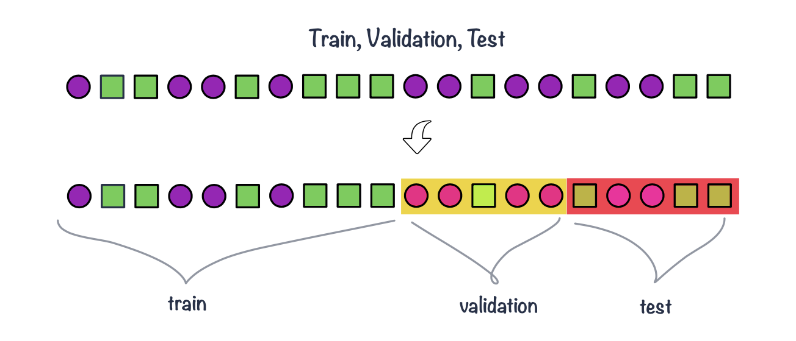
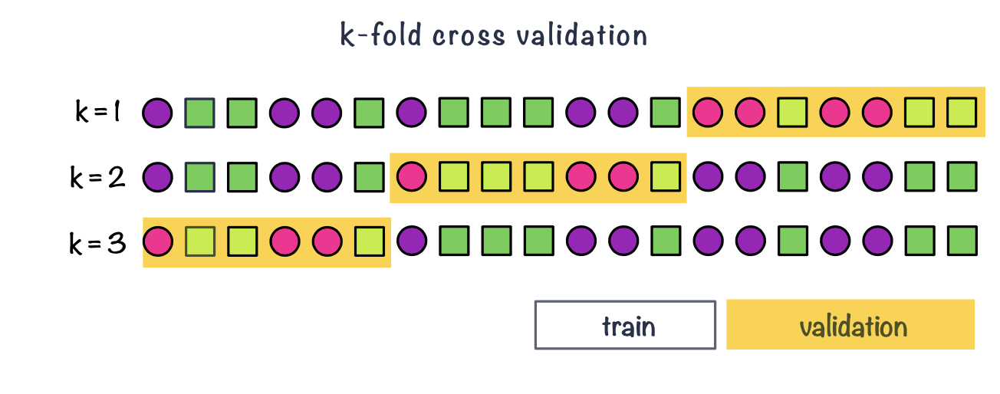
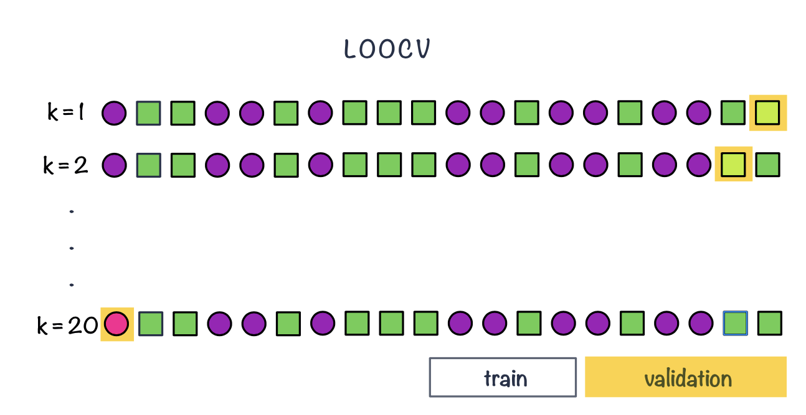

1 Supervised learning: overview
Machine Learning for Life Sciences
1.1 Overview
Supervised learning is a type of machine learning in which we use labeled data to train a model to predict an outcome for new, unseen observations.
Depending on the type of outcome we want to predict, supervised learning tasks can be divided into two main categories:
Classification: Predicting a categorical outcome, such as whether a tumor is benign or malignant, whether a patient will respond to treatment, or which disease subtype a patient belongs to.
For example, suppose we have a collection of biopsy images, each labeled as either benign or malignant. We can use these images and their known labels to train a classification model. Once trained, the model can predict whether a new biopsy image is likely to represent a benign or malignant tumor.
Regression: Predicting a continuous numerical outcome, such as age, blood pressure, or drug concentration.
For example, DNA methylation levels at thousands of CpG sites can be measured in individuals of different ages. By learning the relationship between methylation patterns and chronological age, a regression model can be trained to predict the age of a new individual from their DNA methylation profile. Such models are often referred to as epigenetic clocks.
In both cases, the objective is to learn relationships from existing observations that can be used to make predictions for new data.
1.2 What is supervised learning?
In supervised learning, each observation in the training dataset consists of:
- Features (\(X\)): The input variables used to make predictions, such as gene expression levels, DNA methylation measurements, clinical characteristics, or image-derived features.
- Target (\(y\)): The known outcome we want to predict, such as disease status, treatment response, or chronological age.
The learning algorithm uses the features and their corresponding targets to learn a function:
\(\hat{y} = f(X)\)
where \(f\) represents the model and \(\hat{y}\) is the predicted outcome.
During model training, the algorithm learns relationships between the input features and the target. Depending on the algorithm, this may involve estimating model coefficients, identifying decision boundaries, or storing training observations for later comparison.
The trained model can then be applied to new observations for which the target is unknown.
The central goal is generalization: the ability to make accurate predictions on new, unseen data, rather than simply reproducing the observations used during training.
1.3 Supervised vs unsupervised learning
The defining characteristic of supervised learning is the availability of a known target variable during training.
In contrast, unsupervised learning uses data without predefined target labels to explore underlying patterns or structure.
For example:
- Supervised learning: Predicting whether a patient will respond to cancer treatment based on their gene expression profile.
- Unsupervised learning: Identifying previously unknown cancer subtypes by clustering patients based on their gene expression profiles.
1.4 Common supervised learning algorithms
Different algorithms learn relationships between features and targets in different ways.
Some commonly used supervised learning algorithms include:
- Linear and logistic regression: Models that describe relationships between input features and continuous or categorical outcomes.
- K-nearest neighbors (KNN): Makes predictions based on the outcomes of the most similar observations in the training data.
- Support Vector Machines (SVM): Learn decision boundaries that separate classes, with extensions for nonlinear relationships and regression.
- Decision trees and Random Forests: Use feature-based decision rules to make predictions.
- Artificial Neural Networks (ANN): Learn potentially complex, nonlinear relationships through interconnected computational units.
Many of these algorithms can be adapted for both classification and regression.
Although the algorithms differ in how they learn from data, they share several important steps in the supervised learning workflow: preparing data, selecting models, evaluating predictions, and optimizing model performance.
Here, we will use KNN and SVM to illustrate these principles before exploring model evaluation, hyperparameter tuning, and cross-validation.
1.5 Classification
- Classification methods are algorithms used to categorize (classify) objects based on their measurements.
- They belong under supervised learning as we usually start off with labeled data, i.e. observations with measurements for which we know the label (class) of.
- If we have a pair \(\{\mathbf{x_i}, g_i\}\) for each observation \(i\), with \(g_i \in \{1, \dots, G\}\) being the class label, where \(G\) is the number of different classes and \(\mathbf{x_i}\) a set of exploratory variables, that can be continuous, categorical or a mix of both, then we want to find a classification rule \(f(.)\) (model) such that \[f(\mathbf{x_i})=g_i\]
1.6 KNN example

Algorithm
- Decide on the value of \(k\)
- Calculate the distance between the query-instance (observations for new sample) and all the training samples
- Sort the distances and determine the nearest neighbors based on the \(k\)-th minimum distance
- Gather the categories of the nearest neighbors
- Use majority voting of the categories of the nearest neighbors as the prediction value for the new sample
Euclidean distance is a classic distance used with KNN; other distance measures are also used incl. weighted Euclidean distance, Mahalanobis distance, Manhattan distance, maximum distance etc.
1.7 Data splitting
- Part of the issue of fitting complex models to data is that the model can be continually tweaked to adapt as well as possible.
- As a result the trained model may not generalize well on future data due to the added complexity that only works for a given unique data set, leading to overfitting.
- To deal with overconfident estimation of future performance we can implement various data splitting strategies.
train, validation & test sets
- Common split strategies include 50%/25%/25% and 33%/33%/33% splits for training/validation/test respectively
- Training data: this is data used to fit (train) the classification or regression model, i.e. derive the classification rule
- Validation data: this is data used to select which parameters or types of model perform best, i.e. to validate the performance of model parameters
- Test data: this data is used to give an estimate of future prediction performance for the model and parameters chosen

cross validation
- It can happen that despite random splitting in train/validation/test dataset one of the subsets does not represent data. e.g. gets all the difficult observation to classify.
- Or that we do not have enough data in each subset after performing the split.
- In k-fold cross-validation we split data into \(k\) roughly equal-sized parts.
- We start by setting the validation data to be the first set of data and the training data to be all other sets.
- We estimate the validation error rate / correct classification rate for the split.
- We then repeat the process \(k-1\) times, each time with a different part of the data set to be the validation data and the remainder being the training data.
- We finish with \(k\) different error or correct classification rates.
- In this way, every data point has its class membership predicted once.
- The final reported error rate is usually the average of \(k\) error rates.

repeated cross validation
- In repeated cross-validation we are repeating the cross-validation many times, e.g. we can create 5 validation folds 3 times
Leave-one-out cross-validation
- Leave-one-out cross-validation is a special case of cross-validation where the number of folds equals the number of instances in the data set.

1.8 Evaluating classification
- To train the model we need some way of evaluating how well it works so we know how to tune the model parameters, e.g. change the value of \(k\) in KNN.
- There are a few measures being used that involve looking at the truth (labels) and comparing it to what was predicted by the model.
- Common measures include: correct (overall) classification rate, missclassification rate, class specific rates, cross classification tables, sensitivity and specificity and ROC curves.
Correct (miss)classification rate
- The simplest way to evaluate in which we count for all the \(n\) predictions how many times we got the classification right. \[Correct\; Classifcation \; Rate = \frac{\sum_{i=1}^{n}1[f(x_i)=g_i]}{n}\] where \(1[]\) is an indicator function equal to 1 if the statement in the bracket is true and 0 otherwise
Missclassification Rate
Missclassification Rate = 1 - Correct Classification Rate
Confusion matrix
Confusion matrix allows us to compare between actual and predicted values. It is a N x N matrix, where N is the number of classes. For a binary classifier we have:
| Predicted Positive | Predicted Negative | |
|---|---|---|
| Actual Positive | True Positive (TP) | False Negative (FN) |
| Actual Negative | False Positive (FP) | True Negative (TN) |
Based on the confusion matrix, we can derive common performance metrics of a binary classifier:
Accuracy: measures the proportion of correctly classified samples over the total number of samples. \[ACC = \frac{TP+TN}{TP+TN+FP+FN}\].
Sensitivity: measures the proportion of true positives over all actual positive samples, i.e. how well the classifier is able to detect positive samples. It is also known as true positive rate and recall. \[TPR = \frac{TP}{TP + FN}\]
Specificity: measures the proportion of true negatives over all actual negative samples, i.e. how well the classifier is able to avoid false negatives. It is also known as true negative rate and selectivity. \[TNR = \frac{TN}{TN+FP}\]
Precision: measures the proportion of true positives over all positive predictions made by the classifier, i.e. how well the classifier is able to avoid false positives. It is also known as positive predictive value \[PPV = \frac{TP}{TP + FP}\]
ROC AUC: the receiver operating characteristic (ROC) curve is a graphical representation of the trade off between sensitivity and specificity for different threshold values. The area under the ROC curve (AUC) is a performance metric that ranges from 0 to 1, with a higher value indicating better performance. AUC is a measure of how well the classifier is able to distinguish between positive and negative samples.